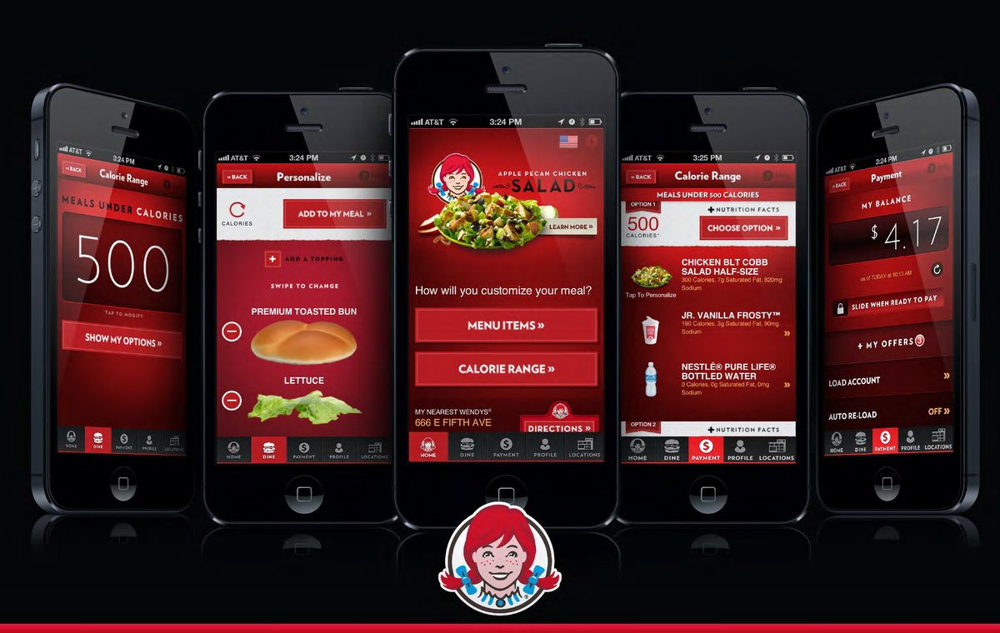

Case Study
Designed the first mobile payment experience to beat McDonald's, Burger King, and Taco Bell to market—winning a Gold Medal Hub Prize and Cannes Award nomination.

In the highly competitive quick-service restaurant (QSR) space, mobile payment was becoming table stakes. Wendy's needed to move fast to compete with industry leaders who were already investing heavily in mobile experiences.
I led a small, agile team through a rapid four-week design sprint to create and test a mobile payment prototype. The insights-driven approach allowed us to validate the concept quickly, leading to successful implementation and industry recognition.
The result: Wendy's became the first major QSR to launch mobile payments, beating McDonald's, Burger King, and Taco Bell to market. The app won a Gold Medal Hub Prize and was entered for a Cannes Award.
The QSR industry was in the midst of a mobile revolution. McDonald's, Burger King, and Taco Bell were all developing mobile payment solutions. Wendy's needed to move quickly to remain competitive, but they also needed to get it right—a poorly executed mobile payment experience could damage customer trust and brand perception.
Competitors were already in development. We had a narrow window to be first to market with a quality solution.
Mobile payments involve sensitive financial data. The experience needed to feel secure and trustworthy from day one.
The payment feature needed to integrate smoothly with existing app functionality and in-store systems.
Success required not just launching the feature, but driving meaningful adoption among Wendy's mobile app users.
We adopted a lean, insights-driven approach that prioritized speed without sacrificing quality. The four-week sprint was structured to maximize learning and validation at each stage.
Conducted rapid competitive analysis of existing mobile payment solutions in and outside the QSR space. Interviewed Wendy's customers to understand their mobile payment expectations and concerns.
Created multiple design concepts exploring different approaches to mobile payment integration. Focused on minimizing friction while maximizing security perception.
Conducted rapid user testing sessions with Wendy's customers. Gathered feedback on usability, security perception, and overall experience. Iterated designs based on insights.
Finalized designs, created detailed specifications, and prepared comprehensive documentation for the development team. Established success metrics and testing protocols.
Streamlined the payment process to a single tap after initial setup. Users could complete transactions in seconds, making mobile payment faster than traditional card payment at the counter.
Designed clear visual indicators of security throughout the payment flow. Used familiar security iconography and messaging to build trust with users handling sensitive financial information.
Integrated payment functionality naturally into the existing app experience. Users could add payment methods, view transaction history, and manage preferences without leaving their ordering flow.
Designed comprehensive error states and recovery flows. Ensured users always understood what was happening with their payment and had clear paths to resolve any issues.
The mobile payment feature launched successfully and was immediately adopted by Wendy's customers. The project's success earned industry recognition and established Wendy's as a mobile innovation leader in the QSR space.